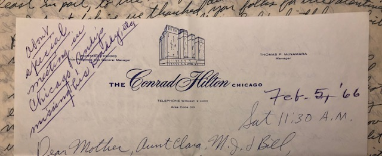
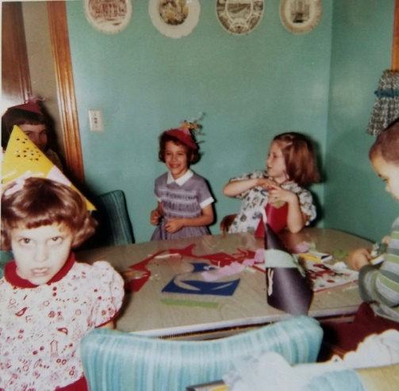
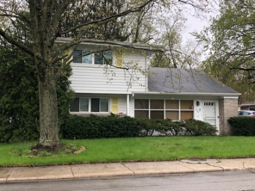
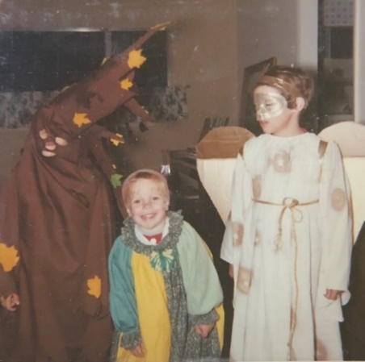
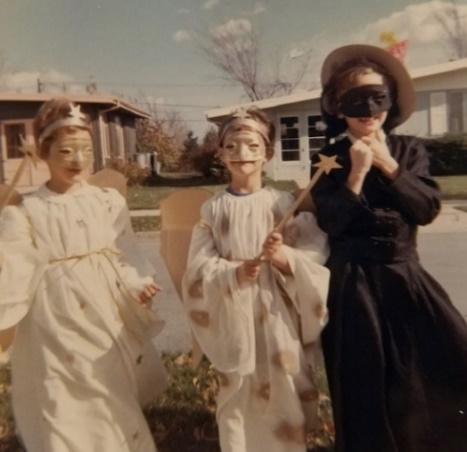
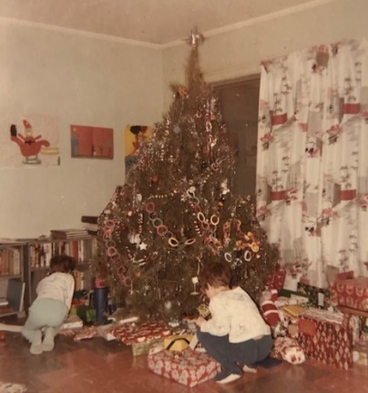
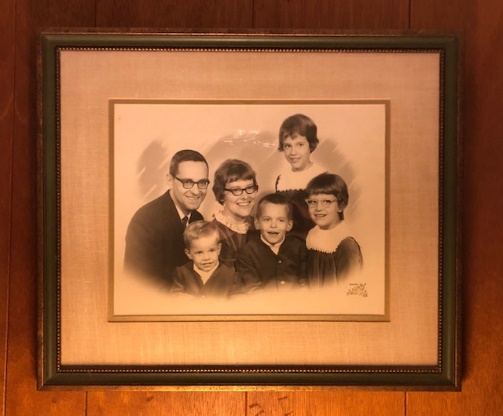
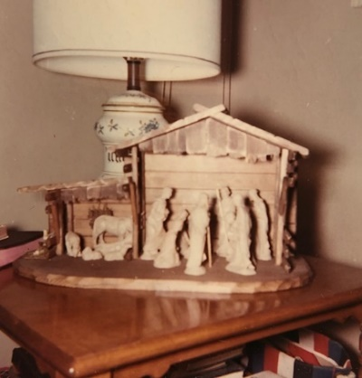

1966
“At the present time it looks like I’ll be taking the Armour position and we’ll try to live in Park Forest.” And so he did. And so we did. There is a constant background hum of four growing children. They are disturbing, noisy, wiggly, rough, and disobedient. They have temper spells, and discipline problems. They run off without permission. Sometimes they manage to be pretty good. There are movies, concerts, plays, and trips. And in the middle of the chaotic days Dad remembers his anniversary, and surprises Mom with 9 red roses, one for each year of wedded bliss.
1-10-66 – Mon PM - Dear Mother, Aunt Clara and M.J. & Bill, I waited to write until we received your letter today. The boys say “Thank you” for their cards. We took some pictures and will send some on later. I guess I wrote about the birthdays. Like you folks we haven’t had much real winter weather, although we’ve had our coldest weather the last few days. Our kids haven’t complained about the lack of snow, however.
We’re home tonight although I may go shopping later and take this to the post office. Ruth goes to a PTA board meeting tomorrow night. Wed is choir practice and Ruth goes to Women’s Association luncheon on Thurs. That evening we’re having some neighbors over for the evening. Too bad about Mrs. Harbaugh. I know you have mentioned her several times in your letters.
Andy had the flu for awhile last week so Ruth stayed home from the choir “twelfth night” dinner on Wed (in place of regular rehersal – and after Christmas rather than before like we used to). We went to one of the choir members homes and had a lot of fun. Last Thurs night was Mariners board meeting. The old and new officers were there. I think I told you that Ruth and I are the incoming “skippers” (same as president) for the coming year. Mariners is the national Presbyterian organization for couples with the emphasis on strengthening the home. It uses nautical terms since it was started in 1927 in a seaside town in California.
We were home Fri night. I finished painting the boys toy chest wagon that grandpa made for them when he was here. He did a better job on it than I would have. Sun morning was choir as usual. Sun evening was installation of First & Westminster Presbyterian Churchs Mariners Officers at First church. The district skippers come from Peoria to lead the installation. At the entertainment afterwards I gave a few tricks. It was the first time I’d given a public magic show in about 10 years. It went OK.
Andy feels OK now (Ruth got to go to the board meeting last Thurs) and we all have been pretty free of sickness this winter so far. Ruth had another appointment about her allergies today and I may have told you she will have to take desensitization shots.
The Carbide situation is still up in the air. Dr. Cavalitto (our director of research) is meeting in New York again (he was there a week ago) and they are working on the administrative set-up of the pharmaceutical work. Pharmaceutical work is at 5 sites, Decatur, 3 back east, and one at Brussels Belgium. It appears that it will be consolidated at one site within 1½ to 2½ years. Decatur is still in the running along with Tarrytown, NY – on the Hudson up from NY City, or a new site. They hope to work that final decision out within 4-6 months. As I said I wouldn’t necessarily go East if a site there, rather than Decatur, is chosen. This is just for research. Production will definitely stay here.
1-17-66 – Mon 7:00 PM - I’ll write this while I’m watching Andy in his bath. Our little bathroom heater finally burned out so its cooler in the bathroom. The little fan in it burned out but the wires still heated up. I think we bought it in Kansas City when we moved into our first home.
Tomorrow, of course, is Ruth’s birthday. Part of her birthday is a new rocker, which she picked out several days ago. The old rocker rocked four babies so I guess it served its purpose. We finally had the kitchen sink and bathroom shower installed. Ruth really enjoys the sink, since the old faucet was almost completely worn out. I suppose it was the original one (about 10-11 yrs) and our water is very hard on the plumbing. Now we need a shower curtain. Our next job will be to replace the bathroom lavatory and put in some storage space around it. I’ll then paint the bathroom a more attractive color. They have epoxy paint which is good to use over tile and where it may get wet. We’re going ahead with a few things since it looks like we’ll be here at least 3 years with the possibility that the research will all eventually be located here. It will be a big decision so all the advantages and disadvantages of various sites will probably be carefully studied. As I said previously, even if things eventually moved East that wouldn’t mean that I would definitely go.
By the time you get this you should have finally received the Christmas box. Ruth had many delays as is always the case but all the gifts are her “creations” except for Bill’s tie. Ruth will soon finish knitting matching gold sweaters for Deloris Musgrave Berland and her husband Steve. They are still in Manhatten where he is in school. Deloris has really matured in recent years and I think the Laidigs are now quite proud of her and her family. They often visit them. Ruth is also almost done with a sweater for her Dad and then will make one for her Mother. She is making me another sweater and I guess that will about finish her year and several months of heavy knitting although she’ll continue to do it. She really likes to do it. Ruth has meetings on Tues and Thurs night meetings and we have choir on Wed (I’ll have deacon’s meeting first). Yesterday was the congregational dinner and meeting after church.
Tues AM - Didn’t finish this last night. I’ll mail the snapshots to you soon. I was ready to mail them with this letter but Ruth wanted to write the dates, etc. on them. Glad to have your letter. I also bought Ruth a book of needlecraft for her birthday. We may have to buy a new washing machine as the old one (8 years) is just about worn out. Sorry to hear about Mrs. Harbaugh. We had company last Thurs night. Ruth had shots yesterday morning and women’s association last Thurs noon. She had PTA board Tues. Hope you’re all well – we’re still free of colds.
1-25-66 – Tues night - I’m writing this with my new pen that I got for Christmas. Its a cartridge type fountain pen and I think I write better with it than with the ballpoint pens. I used up all the cartridges so I got a bottle of ink and am refilling the cartridges with a needle and syringe at work. Ingenious!
Received Mother’s letter today and we were glad you all liked your gifts OK. Ruth has her Mother’s sweater well under way and her Father’s is essentially done. I’ve been wearing my new pull over blue sweater in our cold weather. It’s been down to 4 or 5 degrees a couple of times but I don’t think we’ve been below zero yet. Mother said you had had a lot of snow, also. We’ve had less snow than almost any winter I can remember. We had about an inch last Sat and that’s about all we’ve had other than some flurries. The kids got all muddy and their shoes covered with clay when they went over to a neighbor’s to play. I don’t blame you for not wanting to drive out on the slick streets.
Ruth went to the creative writing (AAUW) group tonight at the library. I stayed home, worked on Mariner (the national United Presbyterian couples organization which Ruth and I are head of this year) organization and then watched the second part of the CBS-TV National Health Test. Last night I went to the annual Neisler Credit Union (where I borrowed for our car etc.) meeting. I’m serving on the board of directors for the coming year (meet once a month). Tomorrow night is choir practice and I have a men’s dinner meeting Thurs night. We usually try to stay home on Fri night. For family treat night with popcorn and pepsi!
Andy has had some more temper spells recently, especially at mealtime but he was better today. He wants to do everything for himself and, of course, he can do a lot of things for himself. He’s a real “contrary two.” He’s always asking where’s Mommy and where’s Daddy so I don’t know how he’ll get along when I go to a meeting in Chicago from Thurs to Sun Feb 3-6. Its the American College of Cardiology and will be primarily MD’s but they will have some drug related papers which will be what I’m going to hear.
Next Mon night is the Mariners board meeting at our house. Our new minister will preach on Feb 6th for the first time – that’s the Sun I’ll be gone. Last Sat I spent about 5-6 hours cleaning the basement. It was in terrible shape. A lot of magic is still mixed up and needs to be sorted. Sun AM was s.s. and church as usual. Sun night we went to the Hofflands where a couple that sings in the choir showed slides of their 2½ month trip through Europe last summer.
Nothing new at work. My new technician is working out real well. She’s not quite 20 yet. The fellow I’ve had for over 2 yrs is 30 yrs old. He recently got a good raise – up to $2.60 but still works 20-30 hrs a week outside at a grocery store as a checker. He has two children and also goes to night school.
That was nice that Norman Krause is Hutchinson’s Man of the Year. I remember the name Gayle Sanders (Mother sent clipping) he was exactly my age (2 wks younger). He was at Juco when I was. I have to write a big report at work this week. It’s the first of regular monthly progress reports that will circulate to the other labs doing pharmaceutical research. Neisler vacation period is July 8-23 I believe. Hope your weather is better.
1-26-66 – Wed AM – Had your letter yesterday. Wrote the Hutch letter to Aunt Clara last night. I’ll send the pictures to you and you can pass them around and have any copies made you want. There are 2 negatives for pictures of our interim minister and his wife at Alan’s birthday party. We gave the pictures to them – they are gone now.
2-3-66 – Wed 6:30 PM - I’ll write this now and we’ll mail it on the way home from choir. We’ll both be going tonight; Ruth went last week, and I stayed home, when Lisa was running a fever. She missed two days of school and Lesle missed one. Andy has a cold and touch of bronchitis. I left work early and we all went to the Dr’s for check-ups. We’re still going with the old washer. Ruth is looking at materials to make a new slipcover for the couch. Its had five yrs or so of hard wear from the kids and is beginning to show it.
I go to Chicago in the early morning (6:49 AM plane) for that American College of Cardiology meeting. Although it will be largely MD’s, I thought it was nearby and I should take advantage of it, and see what it is like. It will be in place of the April Federation Meetings in Atlantic City (like I used to go to). Next year the Federation Meetings are back in Chicago so I’ll go to it then. I’ll be staying at the Conrad Hilton and will come back Sun PM. The weather looks good for tomorrow. (I’m in charge of cardiovascular pharmacology, you know?)
We had an 8 inch snow yesterday with some drifting. Arlene (my technician) couldn’t make it in from where they live out in the country. I shoveled off the driveway last night. We had Mariners board meeting at our house Mon night. We had quite a bit to talk about in starting to plan for the years program. We hope to have one or two good service projects. Mariners is the nationally organized couples (old or young) organization for United Presbyterians. The Presbyterian Men and Women’s organizations are also, of course, organized on a national basis.
Last Sun Rev Swan (the minister of visitation and evangelism) preached. (Dr. Martin had already left) and then in the afternoon there was a reception for him since he is retiring (he is in his 70’s). The new minister Rev Stewart from Indianapolis is here now and will preach Sun. I’ll miss it in the morning but will be back for his installation service Sun evening, the choir will be singing.
Ruth has been asked to be 2nd vice president of League of Women Voters for two yrs and I told her it was agreeable with me since the possibility exists that we might not be here beyond two more years. Glad to have your letter today. Lucky nobody was hurt in the cab accident. Happy birthday to M.J. We had 10 and 11 below and the electricity went off for awhile Sat evening. We went on to bed and the temperature had fallen 6-7 degrees before the electricity came back on. It was below 0 then so we were lucky.
I guess I did alright on the medical test. I didn’t keep a paper score. I guess I should know those things. Ruth was in charge of several blocks for the March of Dimes Drive last Sun PM. She had to get 14 women. It was very cold. Hope you’re all OK. I’ll try to write from Chicago.

2-5-66 – Sat 11:30 AM - As I said in my letter I’ll drop you folks a line from the “Windy City.” I haven’t been outside the hotel since I arrived so I don’t know how windy it is. We haven’t had any more snow up here and the weather looks good for the trip home tomorrow. The meeting has been satisfactory. All MD’s but I like to have an appreciation of the ways MD’s (cardiologists) are thinking in regard to cardiovascular drugs so I’m glad I came. There is, of course, no one here that I know but I’ve seen some of the big names I’ve heard about. I guess Paul Dudley White was here.
I’ve called home and I guess Andy really wondered where Daddy was yesterday morning. Ruth said he remembered I’d left on a plane so he went to the front door to see if he could see. I guess the kids will have to get used to it as I’ll probably have to travel occasionally, especially while the Carbide labs are separated. I go back tomorrow from 1:00-1:59 PM.
Last Wed night was choir practice and we both went after 2 wks of somebody missing. I’ll miss church in the morning, but will be back for the evening service. I’m going to try to go to the fifth annual Milikin University Choir Concert at the Lake Shore Club for alumni. Its tonight at 8:00. I’m sure I can get in even though I’m not an alumnus. After all I know the director ha!
The trip up here was fine, but I almost missed the plane (6:49 AM). The cab didn’t come, so we got everbody out of bed and made it with seconds to spare. I would have missed a panel on some drugs if had missed the plane. Hope you’re all OK and its beginning to warm up some. I’ve had time to relax here since not all the meeting is of interest to me.
2-?-66 – Wed AM – Grandmother dated this letter March 1966, but I think it fits here because Dad is talking about his trip to Chicago. – I’ll write this at work today since I didn’t get around to it last night. It is clear this morning although the weather report had called for some snow overnight. They now say we may get a little snow this afternoon so we have again missed most of the snow that other places got. We’ve just had that one big snow, you may remember, and that’s about it.
My Chicago trip was fine, although they were largely MD’s as I explained, there were enough drug papers to make it interesting. If I stay in my present position I probably should attend the same meeting every 2-3 years. It meets every year. I have a PhD in pharmacology from the University of Kansas. The confusing thing to other people is that I got my masters from Dr. Wenzel in the School of Pharmacy in Lawrence while the PhD is from the Department of Pharmacology at the medical school in Kansas City (with Dr. Walaszek). Also, while pharmacology is a basic medical science and is taught to both medical students and pharmacy students, one can get a PhD from a medical school department of pharmacology without having an MD. The PhD pharmacologist if he teaches in a medical school may teach medical students and graduates but, of course, cannot treat patients. An MD may specialize in pharmacology and may also teach in departments of pharmacology. In fact, most departments of pharmacology in medical schools have both PhD’s and MD’s on the staff. PhD’s and MD’s can both do medical research if they want too but PhD’s, of course, cannot treat patients. I hope this clarifies the confusion that Mrs. Van Zandt.
Thats (sic) for all the Valentines and for returning the pictures. A week ago Tues night was that St. Olaf band which was excellent. Wed night was choir practice. It warmed up some on Sat and Sun. I washed the car Sun afternoon and put up our shower curtain Sat. Sun night was family night at church. There were slides on Africa. Mon night I had an Evangelism Committee meeting at church. I was the temporary deacons representative until we choose 6 permanent members tonight. Last night Ruth went to AAUW contemporary living a speaker on the theater.
Last Fri night was community concert but it was called off when the scheduled singer had a bad throat. We had invited 3 couples in afterwards, but only one made it. The Hofflands were too tired so stayed home after they found the concert was cancelled. He had been gone every night for a month. Mrs. Jensen took sick and they couldn’t come. The third couple was the new minister (came last summer) at First Presbyterian Church – he’s about my age. They came and we had a nice visit. These are all “busy” people so we had hated to invite them over except for a situation like after the concert.
Tonight is choir practice for Ruth and I have deacons meeting. I’m secretary of the deacons. I think Ruth has a meeting tomorrow night and we should be home Fri. Sat night is the first Mariners meeting – an informal dessert at church. Ruth and I are in charge. Sun night is family night again. Mon night is Mariners board meeting. Tues morning Drs. Moffitt, Miller and I fly to New York (It will be my first visit to the Carbide labs back there) for a pharmacology meeting a week from today at the Sterling Forrest lab – out from New York 20-30 miles. We’ll come back Wed night. A week from Thurs night I’m in charge of the men’s dinner at church honoring the boy scouts.
We hope to know within 30-60 days where the final consolidation of the research will be. They say it is between Decatur and the Union Carbide Research Institute labs at Tarrytown, New York (on the Hudson River and out 20 mi or so from New York City). However, no one here believes it will be in Decatur. Many have said they would not go to Tarrytown and some have said they might consider it for a large increase in salary; it would take considerably more money for the higher cost of living and housing there. If the move takes place it would probably be a year from June. I’m undecided but will start putting a few job probes out in the Midwest. Its a very uncertain time, but I guess it was inevitable in our situation.
Hope M.J. and Bill get their house finished when they desire. We’ll be looking forward to seeing it. If we have to make a move I hope we can get a bigger house so the kids will have more play area. We’d like a den too. I probably won’t write again until I get everything over with next week. I believe this month will be our busiest month since we’ve been in Decatur, for outside things, etc.
Ruth has just about finished her Mother’s sweater and is now working on one for Lesle. This winter so far has been the freest of colds etc. that we’ve had in the last 2-4 years. I don’t believe other people have been quite as sick either. With the recent retirement of a man here I’m apparently the only registered pharmacist working for Neisler here in Decatur. I suppose some of the salesmen are registered. It doesn’t mean anything here but I have always kept my registration up. I remember Ray Hockaday. Tell all hello. Ruth fixed a fancy Valentine’s day dinner and table. The kids were thrilled with their Valentines at school, of course.
2-28-66 – Tues PM - Dear Aunt Clara, Mother, M.J. & Bill, I’ll write this to you since I called Mother the other night. Yesterday was not too cold but it snowed almost all day. Most of the snow melted but some remained on the ground overnight and melted today when it warmed up and cleared off. As you know, we’ve only had the one big snow all winter. We’ve hardly had any colds either which is probably due, at least in part, to the lack of snow and severe cold.
I don’t believe we thanked all you folks for the Valentines. Ruth has some things ordered for Lesle’s birthday which we hope will come in time. We’re home tonight and were last night. The kids are eating early by themselves. Ruth and I will eat later. They were so disturbing at the table last night that we are carrying out our “threat” that they would have to eat separately if they couldn’t improve.
Tomorrow night is regular choir practice. Thurs night I’ll go down to church and help paint the church office with some of the other deacons. Its always one of the responsibilities of the deacons to do much of the interior church painting. The deacons meet on Wed night, so I miss choir practice when they meet.
Fri night we’re invited to the Robine Lee’s (he’s Chinese and is a chemist at the lab). They have a new home just a few blocks from us. Last Sun night was the last of the Family Nights at church. We met at 5:30 for dinner with all the family. The children stayed in for devotions and then went to their own groups. Andy never ate very much because there were so many people. The programs were on Africa and India. Our new minister is fine and we are sure the church will be coming alive before long, probably after we leave. We’re disappointed that we probably won’t be here then.
Last Sat night we went to Theater 7 (local drama group) to see “The Time of Your Life” by William Saroyan (it won a Pulitzer Prize). It was funny. We were home last Fri night. Last Thurs night I had to moderate the mens dinner at church honoring the scouts. About 80 there and I think it went OK. I was vice-president of the mens group last year but never had to do very much. They have no new officers so I had to have the meeting since the president was in Florida. The men’s group has been largely older men and has not been extremely active.
As I told Mother we had a good trip to New York last Tues and Wed. I’ll tell all you folks the entire story of all the Niesler Union Carbide fuss when I see you. Most of us are making the decision not to go East but to relocate in the Midwest. I’m in contact with several job possibilities but haven’t made any interview trips yet. For Mother – PhD always stands for Doctor of Philosophy, not Doctor of Pharmacology. One, of course, can have a PhD in any field. My degree is a PhD in Pharmacology.
Our Mariners board meeting was a week ago tonight. We’ll miss the choir and Mariners. Hope you’re all OK and that winter is about over there.

Lesle’s 8th birthday. The dress she is wearing was a gift from Grandmother. Look at those turquoise walls!
3-10-66 – Thurs AM - As usual, I’m slow getting around to this. It has warmed up some yesterday and today so I expect spring will be here before long. We had some snow last Fri and Sat. Tomorrow Ruth and I are driving to Kankakee, Ill. I will be interviewing Armour Pharmaceutical Company. They are, of course, part of Armour Packing Company. You would be aware of the packing company, I’m sure. Armour has been in pharmaceuticals for several years but their pharmacology has never become outstanding. Armour plans to relocate their pharmaceutical operations within a 30 mi radius of Chicago within the near future so taking a job with them would mean renting in Kankakee until their new plant is built. Regardless of where we go we’re going to try and rent for awhile first.
A week from today and tomorrow I’m flying to Memphis, Tenn to interview about a position there. Marion Laboratories is a small pharmaceutical company (sales smaller than Neisler) with home offices in Kansas City, Missouri. They have no research in Kansas City but have a $100,000 a year contract with the University of Tenn in Memphis (medical and pharmacy school) to carry out some research for them. They are in need of another pharmacologist to do work similar to what I’m doing now. It looks promising enough to look at first hand. Although Memphis is not deep South it is definitely South and I’ve always said I would not raise my children near the “Southern Attitude.” There are only 3 small United Presbyterian USA churches (like here) in Memphis with the Southern Church predominating. I, of course, would prefer not to join a Southern Baptist Church, although they have become somewhat more liberal recently. I doubt if there are any American Baptist Churches in Memphis. Well anyway I’ll go see what the job is. I’ll be there Thurs PM – overnight and all day Fri.
I heard from Kansas City yesterday and there are no openings at Midwest Research Institute. That is all contract work and one would probably have severe deadlines to meet and could be quickly shifted around depending on where the contract money is. I think it would probably be wise for me to stay in industry, at least for now. There are straight pharmacy school teaching jobs available at Southwestern Oklahoma State at Weatherford (6-7,000 people in town) – West of Oklahoma City, one at Ohio Northern, Ada, Ohio (4,000 people in Ada) where Dr. Dave Stewart went. He was the Morman who used to work here. Ohio Northern is a Methodist school. These would be straight teaching jobs – no graduate students and no time for research except in the summer. It would be a tremendous job the first year or so preparing all the lectures. I think I’m better suited for research rather than straight teaching. Medical school jobs, of course, combine less teaching and more research but I don’t have the published research reputation to do very well there at this point. Government money is tighter now and most medical school jobs and advancement depend on published research so I would be at a disadvantage. In industry you do much work that is never published because the chemicals are not patented.
Tonight is Community Concert – a male quartet. The one that was cancelled will be held in April. I have a credit union board meeting right after work. Tomorrow is Armour and I’m going to try and paint the basement over the weekend. The big thing about moving is selling the house. I just can’t imagine our having the entire house in perfect order to show.
Last night was choir practice. Tues night I stayed home while Ruth went to PTA board meeting. Our school referendum (for increased taxes) was defeated so there will be another one soon for a lessor amount. Last Mon I flew to Chicago and interviewed Baxter Labs, Inc. Their position looks real interesting and living wouldn’t be too bad in a North Chicago area suburb. I hope to have an offer from them in 2-3 weeks. Baxter’s plant is in Morton Grove and the Milwaukee Road train station is near the front door so some of them commute in by train from Northern suburbs – you have to get to the station, of course, but one might avoid having to buy a second car.
I have written G.D. Searle & Co in Skokie (near Baxter) but haven’t heard yet. They are older and bigger than Baxter but not as big as Abbott in North Chicago or Lilly in Indianapolis. Upjohn is in Kalamazoo, Mich (they are big) and Parke Davis in Ann Arbor and Detroit. I have not contacted any of the latter.
Quick transportation is easier from the Chicago area to Hutchinson than from Decatur. One can fly directly from O’Hare to Kansas City while you cannot fly directly from Decatur to Kansas City. With trains you, of course, can go directly from Hutch to Chicago (Dearborn Station) on the Santa Fe while to come here I guess you have two changes.
I guess thats about enough about what I’ve been doing. I hope to have made a job decision by April 1-15th. We’ll probably have a letter from you today. That was interesting about your skunk. There is a possibility that vacation time might be in June, if I take a job for around July 1st. Glad to hear all the other news and we hope you’re all OK.
3-?-66 – Tues AM - I’ll go back to my old yellow pad today. Today is a little milder after several cool days. The grass is greening up so we’ll have to get out in the yard some before long. We were glad to have your letter and clippings yesterday. I forgot to bring any of them this morning so I’ll send the clippings later.
This week is less hectic than any of the past month. Last night I painted some more on the basement walls (white). I’m about ¾ done and then will have to paint the back hall and basement stairs. I should take up the braided stair treads and have them cleaned and then relay them. They have gotten quite dirty. We’re giving a lot of things away to Goodwill and will also call the trash man to haul away a lot of stuff. I can’t really get the basement in final shape before we get the trash. I told them not to push the house until we get it in better shape and they have only shown it once. We have it listed with two realters but may go exclusively with one later and also cut the price.
The kids had been begging to go to Hobby House Toy Store so we all went last night after supper. The kids save up their own allowance money and then like to pick out their own things. While I was painting afterwards Ruth visited with that Mrs. Lewis (you met her – the larger lady) to the East. They have been in Florida and also have a new grandchild – their first. Ruth is still doing some knitting but has now started to paint some of the dirtiest upstairs walls. The upstairs is also a mess so we must get most of the painting done and the house in order in case someone wants to see it.
The kids will have three extra days of vacation at Easter time so they will have a whole week off. These days were set aside as snow days but didn’t have to be used because of the mild winter. You’re still welcome to come around Easter if you would like. We’ll have Good Friday music and the adult choir will be singing at both morning services on both Palm Sun and Easter Sun. Ruth is going down today for her regular shots (desensitization for her allergies); I guess the’re doing her some good.
Last Sun was One Great Hour of Sharing – I expect you may have it. The kids had put some money in their little offering boxes and took them to church. I added some to what they had put in. Sun afternoon I painted and we were home in the evening. Last Fri we all drove up to Kankakee and I talked some more with Dr. Bastian, the head of pharmacology at Armour Pharmaceutical Company. The total sales of Armour Pharmaceutical are about $25 (plus some zeros?) compared to sales of over two billion for the entire corporation. Union Carbide sales are over two billion while Neisler sales are between five and six million.
One of the other fellows there drove Ruth and the kids around while we talked. They also took us to lunch. The kids were pretty good. In the afternoon we all drove to Park Forest (25 mi North on highway 54 – 4 lane all the way) where the Bastians live and Mrs. Bastian drove us around to see some of the housing. We all ate out later and then Dr. Bastian found us a motel and we stayed all night. Sat morning we drove back and were here in time to go to “The Student Prince” in the afternoon at Millikin University. We didn’t have a ticket for Andy and couldn’t get a baby sitter so we took him and he was real good. We were home Sat night.
Last Wed night was choir practice. A wk ago tonight was Mariners board meeting. We’re getting a service project underway to help some at, and help take high school kids out to Kemmerer Home – a Presbyterian home for children South of here. After the board meeting we went by the Hofflands to help celebrate Mrs. Hofflands birthday. Both Presbyterian ministers were there, they had all been to a concert by the Monmouth College Choir at First Presb Church. A wk ago Mon I went to G.D. Searle in Skokie, Ill (North Chicago Suburb). It was rough flying back but we missed the worst storms that had developed in Ill that day.
A wk ago Sun afternoon I painted some and we had our Mariners Meeting and potluck in the evening. The panel on family devotions was very good. A wk ago Sat night was a party at the Garvers. He works here. A wk ago Thurs and Fri was the Memphis trip and a week ago Wed was Deacon’s Meeting and choir practice. I was home two wks ago on Mon and Tues and I think I wrote last about then.
At the present time it looks like I’ll be taking the Armour position and we’ll try to live in Park Forest. We’ll try to rent if we can since I won’t take much money out of our present house. I haven’t had a formal offer (some of the men were gone this week) from Armour but he hoped it will come through next week. I had an offer for the Memphis position. There you would be an Assistant Professor but do research more like I’m doing here. It wouldn’t have the security since the grant is from Marian Labs in Kans City and they could stop it anytime. Hope you’re all OK.
No Date – We would like to be here for Good Fri and Easter morning music. If you would like to go to Madison go the next week or sometime and I’ll take off work and we could drive up. We might invite that boy from Kemmerer house for Easter but you could probably overlap him a day or so without any trouble. I’ll call you about it later.
Easter – April 10, 1966 (It is so handy to be able to type “What day was Easter 1966?” into my phone and get an instant answer. Grandmother’s date on these pictures was March 6th, which didn’t seem right.) Mound School is in the background on the right.
4-12-66 – Tues AM - Dear Aunt Clara, Mother, M.J. & Bill, Even though I called Mother the other night I suppose I should get a Hutchinson letter off this week, and I guess its time I directed one to you first. Today is rainy and cold again. I don’t think spring is ever going to get here. I guess its better, however, as far as selling the house since I’m sure a lot of people haven’t been out looking because of the cool weather. We’ll be looking forward to seeing M.J. and Bill’s house. As I told Mother, unless there is a sudden change in our plans, we’ll probably be in Kansas the last part of June.
Ruth started painting the girls room yesterday and should finish today. Except for some touching up of spots we’re about done with the upstairs painting we wanted to do. Some of the walls were quite soiled from the kids dirty hands. I finished painting the basement walls (white) a week ago Sat, and now that the basement is pretty well arranged it looks a lot better. The original paint on the basement walls (painted before we came) was faded and dirty and there were several bad spots so it really needed. I finished painting the inside of the garage Sat PM. I had never painted it and it really needed it. I want to paint the basement stairs and the walls above and touch up a few other spots and that will about do it.
This letter will have to be our formal Easter greeting to all in Hutchinson since we didn’t get any cards off. We hope you had a nice dinner and time on Easter. We were at home last night and I worked on income tax. I guess we’re at home again tonight and then choir practice again tomorrow night. The choir sang at both morning services on both Palm Sunday and Easter Sunday.
A week ago last night Ruth and I went to see “My Fair Lady.” That’s the movie that won several academy awards a year ago. A week ago tonight we went to the church (the whole family) to hear the college choir from the College of the Ozarks (a small college South of Springfield, Missouri at Point Lookout, Missouri); it was directed by a man who used to be here at Millikin in graduate school and who was our assistant choir director at church. Last Wed night was choir practice and then Ruth and I went to communion on Thurs night. Fri night the adult choir sang several numbers at the veiling of the cross service. The children went to that. Sat afternoon Ruth took the 3 older children to see “My Fair Lady” while I painted. We were home Sat night. Hope you’re all well.
4-29-66 – Fri – We may receive a letter from Hutch today but I’ll go ahead and write this now. I guess neither one of us have been writing quite as often as we used to. I’m hoping that the May will be a little more relaxing and we can get back on our original schedule. Today is warmer and clear after 2-3 days of cooler, rainy weather. The grass is really growing; I haven’t cut it yet.
Some of the Carbide people were here on Tues and Wed and we had several meetings. I guess there is a possibility that the Carbide man that has messed everything up could be removed from his present position as head of all the research and development. He is a chemist with no pharmaceutical experience. They should have put Dr. Cavallito (he is going to the University of North Carolina – Chapel Hill, NC as Professor of Medicinal Chemistry) in charge of all the research but they decided not to, and it is to late to change things now. Pete Luna, my technician, went up to Armours yesterday for an interview but he is undecided about what he should do. My other technician, Arlene, says that her husband is planning to go to California in June so she will probably leave in July.
The total sales of Armour Corporation (meats, foods, fertilizer, chemicals, etc) is about $2,000,000,000 and about the same as Union Carbides. However, the sales of Armour Pharmaceutical Co (part of Armour Corporation) are about $25,000,000 while Neislers sales are $6,000,000. The position at Armour is somewhat of a gamble but appeared to have more long term future for me than a job at the biggest pharmaceutical companies $100,000,000 - $300,000,000 sales a year. The Armour job is certainly less of a gamble than staying at Neisler – even if they make some drastic changes in the near future.
Ruth just finished painting our bedroom so the bathroom is the only major refinishing job left. I’ll try to start on it this weekend. We have the house listed with 3 realters but its only been shown about twice. I heard from Armour this week that they will pay the 6% real estate fee on selling the house so that will help us if we need to negotiate the price down some to facilitate a sale. We will hopefully have enough for a down payment on a new house in the $25,000-30,000 range. (We’re listing our present house at $21,900 to start.)
I painted some last weekend and then on Sun night we had the Mariners meeting (a local theater group gave a religious play). Mon night was Mariners board meeting. Tues night I had dinner with the Carbide people and Ruth had a meeting. Wed was choir. (I resigned from the Board of Deacons – it met Wed). Last night I went to my first PTA meeting ever. The kids all went and stayed in the nursery. Hope you’re all OK.
5-1-66 – Sun PM – I’ll write this now and maybe drive downtown later and mail it. I’ll enclose some pictures that I picked up yesterday. I just finished mowing the yard for the first time. I started Fri evening and did some yesterday AM also. It started raining about 11:00 yesterday AM so I had to quit then. The grass had gotten so high that I had to do quite a bit of raking.
I sent my letter of resignation in this past week. I said I would terminate June 15th if agreeable with them but since I hadn’t sold our house that I might be available for an indeterminate period of time after that. We’ve only shown the house about 3-4 times even though it is listed with 3 realty companies. The salesmen of another company will be out this week. Even though its supposed to be a sellers market in Decatur I’m guessing we’ll have some trouble. Our major assets are a good floor plan, a full basement and the ½ acre lot. However, we’re at a major disadvantage with only 1 bathroom. Practically all newer houses (we’re 11 yrs old now) in our price range have 1½ - 2 bathrooms. We, of course, would have planned to add one someday. (Not being in the city is somewhat of a disadvantage.) Armour will pay the 6% realty fee which will really help if we have to cut the price much in order to sell. Since we have an FHA (Federal Housing Administration) insured loan (the government insures low down payment loans) we don’t have much equity in the house so their paying the real estate fee will help a lot.
At this time I wouldn’t plan on us definitely making it to Kansas in June. It will all depend on when we sell the house etc. Fortunately Armour is not too particular about when I arrive since they have to get some equipment and rearrange things for my lab. I had said I would try to be there by July 1st but I suppose they would agree to some delay. I hate to leave the family here and go on up alone until the house sells. Another possibility is to rent the house for awhile but I’ll try to avoid that if I can. I’ll have 2 wks vacation pay coming whenever I leave but another possibility is to start right in at Armour and then they would give me a two week leave of absence without pay later in the summer. Armour will pay our motel expenses for one week while we look for housing and will, of course, pay moving expenses. Again, as of now, I can’t say when our vacation will be so you’re welcome to come ahead for a few days visit if you want to.
Today is quite cool and was cloudy until now (6:00 PM). I softened the water this afternoon. This weeks schedule is lighter. In place of choir practice on Wed night we’ll go to a Milliken U music festival concert. A week ago yesterday we cleaned up things thinking they might want to show the house but nobody called. Last Sun afternoon I started to redecorate the bathroom. We had purchased some new epoxy (waterproof) paint, which is good where there is moisture, and its also good over tile. I had to remove the paint above the tile and it was quite a job. I had never used epoxy paint or paint remover before and they are both hard to work with. I worked some Mon night and then finished the job Tues when I stayed home from work. I finished in time for us to go to the last Community Concert (a tenor – scheduled earlier but he was sick) Wed night was choir and Thurs night I went to the men’s dinner at church honoring the high school graduates. Fri night we ate at the drive-in.
Ruth has not had a letter from her folks for 2 wks so she is going to call them up tonight. Glad to have your letter this week. Hope Aunt Claras checkup was OK. I know M.J. and Bill are excited about their new house. Hope everyone is OK.
5-10-66 – Tues AM - We hope you folks had a nice Mother’s Day and received the flowers OK. I didn’t call this time since we had sent the flowers. I don’t believe we had sent flowers to you folks for quite some time. Today is clear but still cool and it got down to 28 this morning. Yesterday was cool, also.
Yesterday evening Ruth went to PTA Board meeting while I stayed home with the kids. It’s harder to get them to bed in the evening since its getting lighter in the evening. I go for my physical this afternoon; this is for Armour & Co – they said I could go ahead and take it here. I am definitely terminating here on June 15th so I suppose we go ahead and take our vacation the last two weeks in June and I’ll try to start work around July 1st. I had originally promised that I would be available around July 1st so I’ll try to hold to that date. Dr. Bastian (head of pharmacology) at Armour is watching the Park Forest papers for rental housing. There are not many available and they are quickly snatched up when they do occur. If he sees one that looks good he will let us know (after his wife looks at it) and we will try to drive up to see it. He called about a house the other day but we both agreed that it probably didn’t have enough room (we didn’t drive up). We have to only consider renting until such time as we sell the house. Mortgage money is tighter now and interest rates are higher.
Tomorrow night is choir and Thurs night we’re having a new fellow here over for dinner. He is to work in the medical department (the 3 original people are leaving and this man was transferred from somewhere else within Union Carbide) and he left his family back East. He goes home every two weeks. Next Sun night is Mariners meeting at church. We have an open house this Sun with another real estate company and then, if there is no luck, we’ll give it exclusive to the company that had the open house last Sun.
Last Wed night we went to the orchestra concert at Millikin U. It was part of the annual contemporary music festival week which they have. Choir practice was called off so we could go. Fri night we took the whole family to the band concert at Milliken. Sat all day I worked around the house getting ready for the open house on Sun. Sat evening we were invited out to a friends house. The minister and his wife were the other couple there.
Sun AM I finished cleaning the basement before we went to church. We came back home after church and finished things up and then ate at a drive-in. We then went to a senior girl (at Milliken and works at church in music) organ recital and then home awhile and then all ate out at the Redwood place (smorgasbord). Hope you’re all OK.
5-26-66 – Thurs AM – I’ll try to get this letter off this time, rather than calling. Yesterday and today have been clear after a rainy spell. We’re beginning to have some real summer-like days, also. I suppose we’ll want to get the air conditioner put in the window before too long. As I said over the phone we went up to Park Forest last Fri and looked at housing. We stayed all night at the Bastians and came back Sat afternoon. Ruth and the older kids had tickets for a dance revue at Millikin (a lot of children performed) but we didn’t get back in time. We did get back in time to go to the Theater 7 (local dramatic group) production of “Kiss Me Kate” (Broadway show). They had brought a man from New York to play the lead and direct. The lights went out during the show so it was almost midnight when we got home.
Sun AM was the usual schedule. I mowed some in the afternoon and then we had a choir appreciation dinner and program at church. The kids went also. Lisa now has her glasses and, I believe, is getting used to them. Alan has been somewhat of a discipline problem recently. We suspect that the prospect of moving may be causing some of it.
Ruth had a meeting Tues night and we went to choir practice last night. I was to go to the mens dinner at church tonight but there were so few reservations that they called it off. Things are easing up now and I need the time to wind up some work here. I’m trying to get all my data together for a paper.
I don’t know our plans for June as yet. I still terminate June 15th. We’re still waiting to hear about our house. Our prospect is supposed to notify the realter this week. We almost rented a house but it was near a railroad and Alan and Andy are wanderers and love trains, and there was no fenced in yard so we decided not to take it. If we sell our house now we might buy. I don’t know yet. We were glad to have your letter and the gift. I’ll let you know what we do with it. Glad to hear all the Hutch news. Hope you’re all OK.
6-?-66 – We were glad to have your usual letter. I don’t have it with me so I can’t recall about any questions you may have asked. We sold our house to the party we mentioned. He is assuming our mortgage payments (this saves costs on both sides) so we would still be responsible if, for any reason, he could not make his payments. He would appear to be a good risk, however, since he has a good job at Caterpiller. He is being transferred from Peoria and started here full time on June 1st. He wants to move in by July 1st so we are going to look at housing tomorrow in Park Forest. We have a reservation in a motel at Kankakee for tonight and we will drive there this evening after work.
Our plans for vacation are a little bit indefinite but if we can line up satisfactory housing in the next two weeks we will probably still leave here for Kansas on the 17th or 18th. We would go to Oberlin first so Ruth can be with her father on Father’s Day. Our closing for the house will be sometime near the end of the month, probably after we get back. I have been busy at work getting my data and paper together. I may not get it done, but can finish it after I leave, I guess. I sorta remember Don Stiles, the builder you mentioned.
We had a most enjoyable anniversary day. I surprised Ruth with 9 red roses and a 2 rose corsage and she surprised me with a very nice, light blue, stylish summer weight sport coat. We had choir practice Wed night and Ruth had an AAUW picnic last night. We stayed home over the holiday and worked around here. Had a picnic in the park Sun and it was chilly. Andy is working at getting trained, I guess. Must go to work.
7-3-66 – Return address on postcard says: 332 Minocqua, Park Forest, Ill - Dear Hutchinson Folks, We were glad to have your letter here yesterday. Yes, I think we had a nice time in Hutchinson. We had a good trip back. We ate supper in Topeka after calling our friends and finding they were not at home. We then drove to see the tornado damage; it was certainly as bad as the pictures and stories indicated. We then drove on to K City where we missed the Moyes that evening by 5 mins – we saw them the next AM and left about noon. Got home about 10:00 after stopping in Columbia, Mo and North of St. Louis for supper. The packer didn’t come on Tues so we had time to get things ready. He came Wed and the van Thurs. It was 6 before they finished. We cleaned late and stayed in the motel. Got here about 1:00. They had already started to unload. We have a garage or we would really be crowded. Has been very hot and lots of work unpacking, etc.
Lesle in front of the rental house on Minocqua. Photo taken in April, 2019.
7-16-66 – Sat PM - As usual, I meant to write a letter sooner. I believe we’re finally getting on to the schedule. We’re getting up about 6:30 which is about a half hour earlier than we used to. We have 5 in the current carpool but I don’t know how it will finally evolve. Dr. Jim Bastian (my boss – head of pharmacology, about 39-40 years old – 3 children) is riding now but I don’t know whether he will continue, or not. Pete will be coming about August 1st (his furniture is somewhere here in one of the Co-op Townhouses but I don’t know where – I missed seeing him by 5 mins the day we moved. He is taking his vacation in Mexico where one of his older brothers is seriously ill.) and he will be wanting in the carpool. I’ve driven twice (about 60-65 mi total both ways counting the pick-up of the other people). Takes about 30-35 minutes one way but its not bad since you are conversing with the other people in the car.
The job, so far, is exactly as I had anticipated and I feel I can learn a lot and make a real contribution since some of the things we will set up have not been done here before. Jim and the other pharmacologists are more oriented towards hormones, enzymes and blood clot work but they have done some work related to the type I’ve been doing at Neisler. I hope to learn about and maybe do some work on the lung. I’ve always wanted to work in this area and its closely related to cardiovascular, where I spent most of my time working at Neisler.
As far as I know our loan was approved this week by First Federal Savings & Loan of Chicago. If everything goes as agreed on, closing will be Aug 22 and we will own the house Sept 1st, although the agreement is such that they don’t have to be out by the 1st.
Today we drove down to the Museum of Science & Industry. It was a perfect day for an outing – clear and temp in the 80’s. (The weather the last few days has been perfect after, like yours, the hot humid stretch – I hope you all got relief also and that Aunt Clara is now feeling better.) We had lunch at the museum and then lasted until about 4:30. Andy got very tired (he took a nap as we carried him around) and irritable, but the other kids wanted to stay until closing time at 5:30. As you remember, the Museum is not far from the U of Chicago. I suppose my dad went there many times when he was at the University. Did you ever have the addresses of where he lived and the shoe store where he worked. We drove by Blackstone St. Didn’t Aunt Margaret live on that street at one time. I vaguely remember going to the Museum that summer we went to visit them. If we drove by the University of Chicago in 1944 that was only 2 years after the first experiments were performed under the Stagg Field Stadium which led to the development of nuclear energy and the atomic bomb. The University is within a mile of the Museum. We drove back home on South Lake Shore Drive and went through Hammond, Ind, and then came back over here – a longer way than the way we went this morning.
We’ll probably go back to the Museum another time since we didn’t begin to see everything. The Williams reunion is in Mich this year (it alternates between there and that town in Ind where the covered bridges are and where Ruth’s Grandmother is buried), and is near Benton Harbor which wouldn’t be to far from Aunt Margaret. One weekend we want to take a trip to Detroit to see Deerfield Village (Detroit is about a 5-6 hour drive). We’ll probably stay all night on that trip. Helen and Dale Johnson, Ruth’s friends (they used to live in Oberlin, and taught under Mr. Laidig) in Evanston, are people we might want to see some Sat also. The Brookfield Zoo is another Sat possibility, as is the aquarium and art museum.
I guess we brought bad luck to Chicago. We had 3 tornado alerts here just after we came, including one in the middle of the night (some damage in the suburbs); the recent riots (we did not drive through the riot area today) (The “West Side Riot” began on July 12 after police and African American youth clashed over the youth opening fire hydrants and playing in the water.); and the terrible murders (on the way home I believe we drove within a mile or so of where they occurred) (Richard Speck tortured, raped and murdered eight student nurses from South Chicago Community Hospital on the night of July 13 into the early morning hours of July 14.). They announced today that they think they know who did it, but he has not been caught. The riots have been near the west-side medical center area so I guess I’m glad I’m not working there now.
Ruth is planning to visit (with the kids, of course) her good friend who used to live in Decatur and who lives in a nearby suburb. A lot of my equipment at work has not arrived as yet so it will probably be sometime in Aug before I start running expts. I need my birth certificate for the Armour Pension Plan. If you have it you can send it to me. Otherwise fill out the 3 unanswered yes & no questions to the best of your ability and send the paper back to me and I’ll send it to Topeka. I’ve never had real occasion to have my birth certificate before this.
Don’t you have an insurance policy for me that you used to pay for. If you still have it why don’t you send it to me sometime. We haven’t heard from the Laidigs for some time, but we assume that they are OK. Andy is making progress in the bathroom area so we haven’t given up hope. The kids are all fine and have quite a few neighborhood friends (more than they had in Decatur). We have a yard (I mowed it once – much smaller than Decatur) but we don’t water. We have no good window for the air conditioner. Hope you’re all OK and Aunt Clara is feeling better and M.J. and Bill got around OK.
7-24-66 – Sun 5:00 PM - Dear Aunt Clara, Mother, M.J. & Bill, I’ll send this to you since I don’t believe you have had a letter from us since we came to Park Forest. I’ll send some clippings to Mother. We’ll mail this tonight but I believe the last Park Forest pick-up is at 2:30 so it probably won’t go out until morning. However, mail is probably just as fast from here to Hutch as from Decatur since we’re on the direct train route from Chicago to Hutch.
The clippings show the townhouses where the murder occurred. In Chicago the’re usually called townhouses or flats, but in Kansas they would probably just be called apartments. You find many of them very close together as you go closer into the city where the population density is higher.
Ruth called her folks the other night since we had not received a letter; they were fine – I don’t know when they will plan to visit us. Thanks to Mother for sending the hospital birth certificate. I hope it is adequate for Armour (its for my pension plan); they might require a state certificate, which would mean sending in those applications to Topeka. Everything at work is fine. I’m going to write my first report by the first of Aug. I haven’t done any experiments since the equipment has not all arrived, but there are some things to write about. Pete Luna (my technician) has not yet arrived, as far as I know, but should show up this week. I may have another new employee under me at least part of the time. He has a B.S. and started about 2 weeks before I did.
Hope you’re all feeling OK and the weather is not too hot. It is much warmer and humid here today so the kids were in the pool (I bought it last Mon night for them) for 2 hrs. We all went to s.s. and church this morning as usual. We may go shopping a bit this evening and then back home for popcorn. We drove across to the museum on 55th street so we went about 3 blocks from the old Lester house. I’ve forgotten, did my dad stay with the Lesters part of the time he was at the University.
Yesterday we went to the Brookfield Zoo (we went once when we were in Franklin Park). It was a warm, not hot, day so we stayed until 4:30, and ate on the way home. Fri night we went to see Mary Poppins for the second time (saw it in Decatur). Ruth took the kids and visited a friend in Hazelcrest (a suburb North of here) last week. A neighbor had a coffee one morning. The minister called Wed evening. It sure is nice Mother and you both have air conditioners for the hot weather. Yes, Mother, I could carry on that policy. Ruth taught s.s. adult class this AM and will next Sun.
8-1-66 – Mon PM - It’s been thundering and lightening for some time this evening, but it hasn’t rained much so far. It has cooled off some after being hotter today. The kids played in the pool (about a foot deep) this afternoon after Ruth cleaned it this AM. I’ve had a cold, the first one in many months, the last few days, but it is better today. The kids and Ruth are all OK. I don’t believe we have much scheduled this week. Next Sun after church we’re driving to Carol and Jack Duvalls in a suburb which is quite a distance from here. Yesterday we took the Lunas to church. His father is a Presbyterian minister in Mexico, but they didn’t go much in Decatur when he was working the second job. After church we stopped at their place to see how they were settled. They live in one of the cooperative townhouses, and have a basement storage area, a living dining room and kitchen on the first floor and two bedrooms and a bath upstairs. Their place looked real nice and I hope they are happy. They have people on both sides but they say the noise is not too bad. After seeing their place they came over to our place and Pete and I went out for food and we all ate here, along with dessert at the end. (Its finally raining some now.) They stayed until about 3:00. We rested and then I mowed the grass (the second time) so we could play croquet after supper.
We stayed home last Sat. Ruth shopped alone for several hours on the plaza including some time at Marshall Fields. Later in the afternoon she took Alan out for a new pair of shoes. Didn’t do much last week other than the regular things. Pete and Linda (their children are Jeff and Laura) showed up Wed night. They had arrived on Tues. He had driven 12,000 miles going to Mexico but he got to see his parents and the other relatives that he hadn’t seen for several years. He has quite a bit of debt so I hope he gets along OK here. At his level it was hard for him to relocate. He left his wife and children in Phoenix, Arizona while he went on into Mexico.
I would say that Aunt Margaret is about the same time from here as it would be to Aunt Nellie’s. Probably 3-4 hrs to Aunt Margaret. We could go up on a Sat and back on a Sun sometime. Glad to have your letter. Hope M.J. and Bill have a nice vacation. Ruth did a fine job at the s.s. class. Hope you’re all OK and its cooler.
8-15-66 – Mon PM - Lisa and I are just about ready to take Spotty to get his annual rabies shot. We smelled a skunk last night while he was outside; it reminded us that we had not taken him in this year. I’m driving the car pool tomorrow. I drive about 66-69 miles on the day I drive depending on whether I have to pick everyone up or not. We worked on our first dog today. Our major pieces of equipment (about $15,000 worth) are here and Pete was pleased that he could now run an experiment. At least for now, I have another fellow (Joe Williams – recent college graduate) under me.
Thanks for sending the write-ups about Alvin Coons. I remember him and would guess that he is 1-3 yrs younger than I am. It rained some this afternoon both here and at Kankakee, but has cleared off this evening. We have had pretty nice weather recently. We got our mortgage OK. Apparently one of the last 90% (10% down) loans in the area. Money is tight and you usually need 20% down. Closing will be sometime the end of the month and we should know by the 15th when we will move.
One of the fellows in the car pool drove up to Madison this last weekend and I believe he said it wasn’t over a 3 hr drive with the tollways etc. Yesterday after s.s. we all drove up to Mundelein (North of Chicago – about 75 mi from here) to Carol and Jack Duvall and family (Carol is Ruth’s good friend from school at Oberlin). Jack was working an extra job since he is an airline mechanic and is on strike. Carol has been working also. We got there about 12:30 – ate lunch – the kids played (they have 5 children) and we left about 5:30. It rained some coming back home.
Sat AM we relaxed at home and then all went to “Born Free” (movie) Sat afternoon. We then bought Andy some new shoes. Fri night we ate out after signing the mortgage papers. Glad to have your letter. I mailed your letter from Kankakee last week so it may not have gotten there as soon as usual. Glad the folks had a good trip. The kids have used the I Smith boxes (heavy wooden boxes from the old grocery store in Hutchinson) on the back porch for their toys - Thanks. Eldon Laidig had just arrived on the Un of Tex campus to finish his PhD when the shootings occurred. (August 1, 1966 - the University of Texas tower shooting - 16 people killed, 31 injured.) Hope you’re all OK.
8-22-66 – Mon PM – We were glad to have your letter today and to know that everything is OK. Today is clear and cool after rain yesterday. I drove today for Pete and he will drive for me tomorrow. I may have told you that the lady (24 yrs old, a bilingual (Spanish) secretary to a high up man in the International division) in our carpool quit Armour a week ago Friday. This leaves the 4 men. We’ve been taking a regular day each week and alternating the fourth day. The carpool has worked fine although I will be farther away from the others after we move. An Armour fellow lives just around the corner from the other house but he’s in a carpool that has been the same group for 6 yrs. The young fellow in our pool is married but has no children and is classified 1-A for the draft and might be called sometime. Joe Williams, the BS fellow who has been working some with me is also 1-A (not married) and has to go for his physical before long. We had a luncheon today for one of the young fellows who is leaving to start graduate school at the U of Wis in Milwaukee.
Ruth finished knitting a sweater for Alan that she had started last spring after it had warmed up. She had to make it larger, of course. She is knitting a sweater for Mrs. Rev Moyes in Kansas City (the one who had surgery – the man). No reason other than she just wanted to do it. Ruth is playing the piano at this time. She has practiced more here in Park Forest than at any time since we have been married. We had the piano tuned not long ago, but it may have to be done again after we move.
The last we heard closing for our house will be the first week in Sept and moving between the 6th and 15th. The real estate man is not charging us rent after the first and as I probably told you is paying our moving expenses over to the other house. The other people bring our mail by once a week from over there. I transferred magazines etc to that address. The house we’re in right now has been sold, so there will be 5 families moving all at the same time. The kids may have to start school a few days before the move so they will have to be taken over by car since its too far to walk from here. I remember walking it a few times.
Ruth just says she finished that blanket she started at your house. I think you’re doing the right thing in thinking about getting rid of the apartment. I just don’t think you can look after it properly as you get older. We thought about Aunt Margaret when we went over into Michigan to that Williams reunion. It was 100 miles from our house to the reunion site (about 15-20 mi from Berrier Springs, and 5-10 miles from St. Joseph). It took us a little over 2 hrs. We still plan to go to Detroit (about 300 miles) sometime to visit the Ford museum and Deerfield Village. Our plans also call for a weekend trip to Decatur sometime in Sept. The Laidigs may stop by here on their way back from Canada in October (Mr. L is up there on highway business). You plan to come anytime after we get over in the other house. We would meet you downtown at the station, of course.
Next Sat night is our s.s. class party at the assistant ministers yard. We have a babysitter. I don’t know whether we’ll go anywhere else next weekend or not. We don’t usually go out on the highway on holiday weekends, so we’ll probably be home on Labor Day. Last Sat we left about noon for Wis. We ate sandwiches along the way and with one stop for dessert were in Madison by a little after 4:00 PM. We got a motel in Monona, the kids played awhile and we then drove along Lake Monona, by the Capitol, and around the University. Ate supper and then drove by the Stadium (they have a new addition), went by Aunt Nellie’s old house (its a dark green color) and on over to Villas Park. The kids rode the Merry-go-Round, train, and played awhile. I showed the family where I had gone in the water ha! and I remembered how I sailed my boat on the lagoon. I remember meeting Mr. Hilton there once. It got dark so we saw the zoo before we left and went back to the motel.
It rained most of the night and rained some the next AM as we drove up to Baraboo (we ate at Howard Johnson’s on the way). We were there by 10:00 to see the loading of the circus wagons by horses. Its called the Circus World Museums and is the place where M.J. and Bill must have been. They had a 1 hr one ring circus at 11:00. We ate lunch there and saw the rest of the museum and it was raining again as we started back a little before 3:00. It rained hard most of the way in Wis, but cleared off as we stopped for supper in Ill. It started raining again as we reached the O’Hare interchange, and it rained the rest of the way home. We got home about 8:30. It was the only bad weather of our 5 trips so far.
Hope your things went off OK yesterday. The trip to Madison from Park Forest is about 3½ to 4½ hrs depending on how long you stop. We could easily go up some Sat and back on Sun sometime if you come up. Our new address will be 454 Tomahawk, but continue to write here until we let you know. The Circus Museum is about 12 miles from Dells. I guess we went there once when we were in Wis. Hope you’re all OK. I had my watch cleaned and repaired. It looks like new. Its 17 yrs old now, I guess, and keeps good time.
8-30-66 – Tues PM – The last few days have been warmer, but I doubt if we’ll have much more real hot weather. Its been dry all summer in Illinois, I guess, and especially so in the Southern part. It hasn’t rained here since we went to Wisconsin.
We have a new fellow who wants in our carpool, he lives a couple of blocks from over near where we’re moving, so I guess we’ll take him in. That will make five again, each person driving one day a week. It looks like we’ll be moving about the 15-16th. We’ll have closing the end of this week or sometime next week, I guess.
The kids say they are not ready for school, but I imagine they will be glad to get back. Alan starts kindergarten a week from Thurs. The kindergarten is not public since we’ll be in Will County, the first county South of Cook. We pay a monthly fee for his kindergarten.
Last week one evening Ruth took the 3 older kids to a movie. I stayed with Andy and he sure wanted to go but he was tired and asleep before they got home so it was best he didn’t go. Ruth has “held up” real well in our rental house with all the inconveniences of things not unpacked, etc.
Everything at work is fine. I spent most of last week, including time in the evenings, writing my first big Progress Report. As of now I am positive that I made the right move in changing jobs. The new job, new drugs, etc., has been an inspiration and I’ve already learned considerable.
Sat AM Ruth finally had time to do a big grocery shopping. In the evening we had a babysitter and then we went to a s.s. class steak fry in the backyard of the assistant ministers house. He’s written for our church letters, I believe. Sun AM was regular s.s. and church. We were home the rest of the day and it was warm enough that the kids got in swimming pool. I cleaned the car. Alan went for his pre-school physical exam yesterday and had several “shots.” He was tired from them today. Hope you’re all feeling OK. We were glad to have Mother’s letter last week and to hear all the news. I guess thats about it.
8-31-66 – Wed PM – We were glad to have your letter yesterday. Those certainly were tragedies with the boy and the Dr; I assume the boy was a trumpet or cornet player. I suppose the Dr could have permanent damage. Ruth is sewing right now, and has just about finished a school shirt for Alan. She finished new school dresses for each of the girls. She finished that sweater for Mrs. Moyes.
The package for Lisa came today. She also received a package from Oberlin. The Laidigs are back in Oberlin from their trip North for the highway business that Mr. L does. They may come East for the Covered Bridge Festival at that small town in Indiana. We went last year. They plan to come on up here. I’ll let you know, as soon as possible, what time the’re coming so you, if you want to, can come at another time.
Tomorrow I have to go downtown to First Federal Savings & Loan Association (1 S Dearborn – North of the Dearborn Station, I guess) for the “closing” on our house. Ruth fortunately doesn’t have to go. In the morning I have to get a certified check for the costs that I haven’t already paid. I’ll then go down on the train; closing is at 12:30 and I’ll come back afterwards. I’m taking off work, of course. The other people won’t be there but will be represented by their lawyer, I guess.
Mrs. Bredenberg (the one we’re buying from) invited Ruth to a coffee this Friday to meet some of the neighbors. We think she has felt sorry for us in this crowded house. They said she was more anxious to get out of their house in July than he was. I think I mentioned that the realtor is not charging us any rent here this month, and he will pay our moving expenses over to the other house.
Ruth is going out to the first circle meeting this evening. We assume we’ll try to sing in the church choir, but we don’t know whether rehersal starts tomorrow night or not. I have to buy a bicycle for Lisa’s birthday since we promised her, like we did for Lesle, one on her 7th birthday. We stayed home most of the Labor Day Weekend. I did a lot of general reading. I’ve tried to do quite a bit of reading while we’re here since I didn’t have so much to do here. I haven’t reviewed many areas of pharmacology in several years. Everything at work is fine. We have most of our new equipment and are now running regular expts.
Labor Day we ate a picnic lunch in the Forest Preserve near here, and then took an hour and a half hike back into the woods. I guess it was the longest hike like that we had ever taken. I had to carry Andy most of the way back. Ruth has been going once a week to the allergist and is getting some better with her desensitization shots. She goes in the morning before I leave and then after leaving me she takes Alan for his kindergarten enrollment. The girls each have 26 students in their classes which is less than they had in Decatur. Five of your six grandchildren are now in school. We don’t have a lunch program here so the girls have to eat at home. We hope Alan gets in an afternoon kindergarten. Glad to hear you’re all OK.
9-13-66 – Tues PM – I’ll try to get this off a day earlier than last week. The mail isn’t picked up at night at the local post office so I may not take it down to mail. Today is warmer and cloudy, with a slight chance of rain. There has been a lot of air pollution and smog over Chicago; we get some out here but its not too bad. Ruth notices it more than I do because of her allergies, etc. She is better, and will have to go only once a month for her desensitization shots – that will save money, of course.
We plan to move next Monday. It will be a local man for the heavy stuff and we’ll carry some of the smaller things in the car. We had originally planned to go to Decatur that weekend, but will delay it until the next weekend, I guess. The other people are moving on Sat, so we can’t take anything over until Sun. I suppose I will have to take Mon off from work. We are very anxious to get moved. The kids are getting quite restless here and are disobeying quite often. Just before I got home tonight they had all run off with a couple of the neighbor kids to see some road construction; they had not asked and would not have been allowed to go there anyway.
The kids like school OK, I guess. Today was a hard day for Ruth since it was my day to drive. It takes 30-40 minutes to walk from here over to the other school. The neighbor lady took the girls. Alan visited the neighbor boys over where we’re moving and then went to school from there.
We were glad to have your letter yesterday. That Kenneth Glaze who was killed in Vietnam was in school about the time I was, I believe, or else I knew one of his brothers. I remember Olive Glaze, my third grade teacher I believe. That was too bad about Dr. Orthwein. I believe Dennis Smith was a year behind me in school and he played the cornet.
Ruth enjoyed her circle meeting last Wed night. My trip and our other errands on Thurs went OK. I went down on the train OK. I rode back with the Realtors lawyer who lives in Park Forest. In the evening I went to choir practice and then bought Lisa’s birthday bicycle (she can’t ride it very well) on the way home. A few mins after I left Andy rolled off the piano bench and cut his lip. Ruth got the neighbor man to take them to the Dr. to see if he needed a stitch. Since Andy can’t use a straw he didn’t give him any stitches (?). It wasn’t much of a cut. I’m surprised they haven’t hurt themselves any more than that, considering how rough the’ve been recently. It was the first night I’d gone anywhere alone except for shopping.
Ruth has refinished our dresser, and that chest we had in the living room, in an antique green. They will both go in our bedroom. We stayed around home most of Sat. Fri night was Lisa’s birthday dinner. Sun after church (we both sang in the choir) we had the Duvalls down (we visited them one Sun). One of their children had a birthday that day so we had another birthday cake.
Ruth is out shopping this evening. Ruth was pleased with the coffee the lady (Mrs. Bredenberg) gave for her over in the new neighborhood. They were very friendly. Hope you’re all feeling OK. That was a nice visit with Bertha Tucker. There is a National Life and Accident Ins office nearby. The dress was fine. Will be shortened.
9-27-66 – Tues PM - I have to go down after a bit and get some flexible pipe to vent the dryer to the outside. We never bothered to vent it in Decatur since it was in the basement. Because we didn’t we got a lot of lint in the basement. The washer and dryer are in the utility room here behind the kitchen, and the dryer has to be vented, since it lets too much moisture and lint into the house. I hooked up the washer last night.
Tomorrow night we visit the session at church prior to joining on Sun. Thurs night is choir practice. The kids all like school OK, I guess? The girls went for their first piano lessons today. They are taking them from a lady (Mrs. Aageson) over near where we rented, so Ruth visited a neighbor lady while the girls had their lessons.

This is Mrs. Aageson’s house, across the street from the house we rented on Minocqua. The four older kids had lessons and recitals here for many years. Photo taken in April 2019.
Alan has the most friends he has ever had in the neighborhood here. The days are getting cooler and it got into the 30’s yesterday morning. I may not have mentioned that the two added on bedrooms have a separate furnace. The kitchen wallpaper that I put up (I had done about 2/3) started to peel off since I had not sized or sanded the underlying plasticized wallpaper. Ruth took it all off now we’ll have to put it up with regular paste. It was the pre-pasted kind that you dip in water.
Work is OK – I’m plenty busy. Sat morning we drove to Decatur and got a motel room at a motel near where we lived. In the afternoon we visited the old neighbors. I saw one of the Neisler fellows and called another. Things are still in a state of uncertainty and I’m glad I left when I did. We saw our old house and the man and his wife have built a new garage and enclosed the old garage ready to make a new dining room. He is a real worker and does most of it himself working late at night. He makes his labor money when he sells the house.
Sun we went to the old church and sang in the choir (46 there including students). It is, of course, a much better choir than the one here. We had dinner at the Hofflands and stopped to see some other people before we came back. Got here about 8:30. We were glad we went. The Laidigs will probably be here about Oct 8-15. Why don’t you come right after that. Tell all hello.
10-5-66 – Wed PM - Ruth should be home anytime from the first PTA meeting of the year. I suppose I’ll go once in a while. I think I only went one time in Decatur, so I suppose I should go more often now that we have three children in school.
We had distressing news today when we heard that Rev Moyes’s now has cancer of the liver. He’s the one in Kansas City that we saw last summer. He had surgery for cancer several months ago and I guess it had already spread. I’m glad we got to see them last summer. Ruth knitted a sweater for Mrs. Moyes recently and she sent the thank you note with the news.
The Laidigs plan to attend that Covered Bridge Festival at Rockville, Ind this weekend and then drive up here Oct 11. I imagine they will stay until the Sat or Sun the 15th and 16th. They could come one day later that week. I would leave work a little early and we could pick you up at the station. If the train arrives at 3:15 you would have to wait awhile until we got there. Another possibility would be to come on the 21st and we would pick you up the same way or, if you want to go to Madison, we could pick you up at the station and go on to Madison Fri night and come back Sat morning. If you wanted to stay longer in Madison you could come back on the train and we’d pick you up at the station.
We’re gradually getting settled although we still have redecorating to do. Ruth has really worked hard but she likes to redecorate a house. Last Sat and Sun we worked around the house and I made good headway on cleaning up the stuff that had piled up in the carport. Sun AM we were welcomed into church. This Sun there will be a reception for the new members. Tomorrow night is choir practice. We like the house fine and I think it will give us the room we need. We like the king size bed.
Glad to have your letter. Hope everyone is feeling OK. The nights are getting colder here. I’m “snowed under” at work. I’m involved in more projects than I was at Neisler. The paper stuck the 2nd time in the kitchen and we papered (vinyl wallpaper) 2 walls of the girls’ bedroom Sun night. I’ll have to put up our storm windows. I could meet someone at the airport. It is quite a bit farther, of course. I bought new casual shoes Mon PM. They feel OK.
Week of 10-9-66 – Dear Mother and All, Thanks for your letter. Your schedule sounds fine. Unless something comes up I will meet you at the Dearborn Station as soon as I can get down there. Just wait on one of the benches and I’ll see you its not such a big station. Ruth is scheduled to teach s.s. class that Sun so I will go alone and take you to Madison. She can easily get a ride to church. We were all in Madison last summer you know, so the kids won’t miss anything. I think this plan is the best and it avoids the bother with the kids in the car. The Laidigs made it OK and everything else is fine.
No Date – Dear Aunt Clara, Mother, M.J. & Bill, I’ll write on some of this old Neisler stationery. It is much colder here today and will get down into the 20’s or lower tonight, which will make it our coldest night. As you may have heard on the news we had quite a bit of snow yesterday. It was snowing quite hard when we got up in the AM, and snowed most of the way to work. Near the lab and for a few miles to the North it didn’t snow much.
Ruth went to the allergist today and he gave her some antibiotic for an infected spot on her leg which started with an insect bite. The kids were pleased with their cards, Mother. Glad you had a nice companion on the train. I thought she might be someone like you described when I saw her on the train. We were certainly glad you could come. I got home OK. I got the low living room curtain up on the front window Sat PM while I listened to the football game. Ruth did some shopping Sat PM.
My boss leaves for Japan in the AM. I’ll go to Pittsburgh on the 15th. Dr. Bastian, my boss, is stopping in Hawaii on the way back. Last Sun PM we had the callers from the church for the pledges and then Ruth and I went to the Messiah rehersal – they had a big crowd. The rehersals are at the Bloom High School which is the main high school in Chicago Heights where our church is. We go for choir practice tonight at someones home since we don’t have to sing Sun.
We were at home Mon and Tues nights. Ruth went to circle meeting last night since PTA open house was called off because of the snow. The kids did not have to go to school yesterday because of the snow.
Hope you’re all OK. I’m glad you didn’t try to come, Aunt Clara, since it would have been hard on the train. Even though it was windy, the weather was the best one could have asked for, especially considering the change in weather this week. If the weather had been like yesterday we probably wouldn’t have wanted to drive to Madison. As I told Mother, one can park right by the Dearborn Station, so it makes only a short walk from the station. However, like that Sat AM, it often quite a distance walking down to the right coach on the train. It looked like the pullmans and compartments were nearer the main part of the station.
The kids were thrilled with trick or treat Mon night. Your letter came after Mother left since it had, by mistake, been sent to the address of the people who used to live here. Sorry you couldn’t come but maybe someone can drive you up sometime when its warm.
 
Trick or Treat. Alan is a tree. The witch is next door neighbor Carole Phillips.
11-21-66 – Mon 5:00 PM - I just arrived at O’Hare so will write this while I’m waiting. This was my day to drive but I had traded off. I got a rental car at Kankakee and then drove it by home. I stayed there while Ruth took the girls to their music lessons, and left for here after she got back. I beat the traffic rush. The plane for Pittsburgh leaves at 6:45. I’ll be at the Hilton Hotel tonight and then see the fellows tomorrow and come back tomorrow night. Going back to Park Forest I’ll get another rented car. It will be quite late tomorrow night when I get back home. I’m going to visit a couple of pharmacologists at the University of Pittsburgh, School of Pharmacy (like Dr. Wenzel at Kansas). They have done some work with some of our drugs.
The weather is warmer today and is supposed to be nice tomorrow, also. I guess the girls are getting along fine with their music lessons, although it is sometimes hard to get them to practice. They are switching their lessons from Tues to Mon so I’ll have to switch my driving day from Mon to Tues. Everything at work is fine. Dr. Bastian is still in Japan. I may have mentioned that he went to Japan to find out about some drug testing that Armour is having done over there. He is planning to stop in Hawaii (sp?) on the way back.
Yesterday we all went to church as usual. The adult choir sang and did OK but Ruth was one of only four altos. Choir practice a week ago last Thurs night was at someones house since the adult choir didn’t have to sing at the service a week ago Sun. The kids all had colds so they all stayed home with Ruth and I was the only one to go to church. There was a big crowd since the youth choir sang.
Yesterday afternoon Ruth and I both went to Messiah rehersal (Ruth missed the second rehersal a week ago yesterday) at the High School over in Chicago Heights. This is a community chorus (like the one in Hutchinson) which sings every year at Christmas (they do not always sing the Messiah) with orchestra accompaniment. They have one of their biggest choirs this year and it has been fun singing. I think I sang the Messiah once in Hutchinson when it was out at the Sports Arena, and then I played the cornet once when it was at Convention Hall.
My job over the weekend was to put together the shutter panels for the kitchen window. The matching fabric finally came in (it was quite late) so Ruth was quite anxious to get them started. She put the undercoat on them today and will probably finish painting them tomorrow. The fabric inserts don’t take long to make. I put the girls shutters up last week and they look real nice. Ruth finished antiqueing those bookcases (I cut them in sections), so we have some more book storage space. Glad to have your letter last week and we hope everyone is OK.
12-?-66 – I better write this tonight since we have Messiah rehersal tomorrow night and regular choir practice on Thurs night. There is another rehersal Sat night, and the performance is next Sun afternoon. We have both enjoyed singing in it. It will be with the orchestra like the one in Hutch used to be. Our church choir sang at the Union Thanksgiving Service at the church (all my pens are lousy) (This is written in pale pink barely readable ink. Argh!) on Thanksgiving AM, as I may have said over the phone. They didn’t have a nursery so the kids sat in the balcony with that friend of Ruth’s who was visiting us. Afterwards we all came back home so Ruth could finish making the desserts for our dinner. We drove to the Duvalls in Addison (NW of Franklin Park) and had our dinner about the middle of the afternoon. Mr. Duvall (Jack) is my age and Carol is 2 yrs older than Ruth. Jack and I watched the football and we drove back after dark. It was raining then.
I was off work Fri and didn’t do much. Ruth and Shirley went downtown awhile. We stayed home Fri night. Sat was about as usual and in the evening we took Shirley back downtown to the bus station in the loop. The Christmas decorations on State Street are very pretty. It rained that evening and there was one seat left on the bus for Shirley. Shirley (Mrs. McNulty) is a year older than Ruth and is a graduate student at the University of Wisconsin working on a Masters in Spanish. She and Ruth were classmates up through high school and she started to KU at the same time as Ruth but had to stop because of arthritus. She has had a hard life. She married an older man who died 3 yrs ago and did not leave her anything. They had a good marriage and he helped her get her college (in Denver). She has been sick some since and has taught, and was one of a select few to be chosen for this special group, all getting their Masters together. She has a boyfriend in Denver. The last time Ruth saw her was at our wedding.
Carol Duvall (where we ate on Thanksgiving) was in Ruth and Shirleys class in grade school but she moved away. The 3 women had a good time visiting. Sun schedule was as usual with Messiah rehersal in the afternoon. Hope you’re all OK. Kids are OK but noisy. The weather is colder here. I drove today but no more snow yet. Everything at work is OK. Dr. Bastien got back from Japan. We’re working on the front bathroom shutters. I got the acoustical tile up around the washer and dryer.
12-6-66 – Tues 7:00 PM - I have a better pen than last, so I will try to write more legibly. Yesterday and today have been warmer, but it has been rainy and foggy. Today was my day to drive, but the fog wasn’t as bad as yesterday, both morning and evening. We all leave a little earlier on the bad weather days and I believe we have only been late once. I still get home from work earlier than most of the men in the block, and I don’t have to leave any earlier in the morning.
We can’t seem to locate M.J. and Bill’s address so would you please pass the enclosed letter on to them. It was a real coincidence when the Investor’s man called and after we had talked awhile, to find out that he knew both M.J. and Bill at K-State.
Last Wed night was the Messiah rehersal with the orchestra. Thurs night was regular church choir practice. Ruth did not go there since our regular babysitter could not come. Sat afternoon the 3 older kids went to a play (Community Children’s Theater) at the school and I stayed with Andy while Ruth went shopping. Sat evening was the full Messiah dress rehersal with the soloists and orchestra.
Sun morning was church as usual. The Messiah performance went fine in the afternoon. I’ll enclose the clippings and the program. It was rainy and cold but they had a good crowd. It was held in the Bloom High School, which is the main high school in Chicago Heights (East of here – went through there on way over to the highway going downtown). I believe Ruth and I both enjoyed singing in the big chorus. We have been eating out on Sun evenings after Messiah rehersal but the weather was so bad that we stayed home Sun night.
We were home last night. Tomorrow night Ruth has circle and there is an open house at school at the same time. I haven’t thought much about Christmas but Ruth has already been working hard. Ruth and I are social chairmen for our s.s. class so she has been working hard on the Christmas program at church which we are in charge of (our class). Andy slept with us last night because of a cold but I believe he’s better today. Ruth and Lesle have colds, also. Everything else is about the same. Hope you’re all OK and everything is fine. That was a nice trip you had to Jetmore. You were lucky to get both trips in this fall.
12-15-66 – Thurs PM - I waited to write your letter so I could include it in your regular card. Also, Aunt Clara’s card was mailed earlier with a note so you have probably seen it by now. Today was perfect weather for this time of the year and the last few days have been nice after our dark dreary spell. Ruth got the cards off early this year because we had moved and getting our cards first would enable people to change our address. Our mail is being forwarded OK from Decatur, however.
Ruth has been working hard on making some presents, decorations, and, of course, buying many presents. I guess we’re on as good a Christmas schedule as last year when things were late because Ruth was knitting so many presents. Ruth bought a silk-screen outfit shortly after last Christmas and used it this year for the cards. It saved a lot of time in making the cards; she loves to be creative and make our cards. She just finished making a nice pair of red slippers for Deloris.
I guess we had a letter from the Laidigs not too long ago. They are busy this month because they have accepted offices in Eastern Star and I believe they take office this month. They had been active years ago but had been inactive while the kids were growing up. Lisa went to Brownies after school today. As you may recall, Lesle did not want to join. Lisa enjoys it. The girls both have more interest in their piano than I anticipated, and have already gone far beyond what I ever did ha!
I’ve had some hoarseness for about a week. Fortunately it didn’t start it after the Messiah was over or I wouldn’t have been able to sing. I didn’t have any voice last Thurs night at choir practice but it got better and I was helpful on last Sun’s anthem. It was worse yesterday, but better today. Tonight is choir practice again. I’ll need my voice Sun afternoon since I’m supposed to do a few tricks at that all-church Christmas party. As I think I told you, our s.s. class is in charge of it and Ruth has coordinated it since we’re the social chairmen.
Ruth has had a kidney infection the last week, but it has cleared up pretty well on a sulfa drug. The kids haven’t missed any school but have traces of cold, I guess. Mon night we all went out and bought the tree. Tues night we all went to the library, and went shopping awhile. Later in the evening I put the tree up. Its in the family room by the doors.
Last night Ruth went out to eat at a circle meeting. I ate pizza with the kids and they decorated the tree after I had put the lights on. The kids strung popcorn and cranberries. Last weekend I spent most of my time sorting and storing all my magazines, books, clippings, etc. Found a few of your clippings. Ruth did the cards last weekend, and since she writes notes on all the out of town cards, it takes quite a while.
Haven’t received your letter this week but I’ll mail this anyway. Best wishes to all for the Holiday Season.
All lined up on Christmas Eve.

Lesle and Lisa attacking the pile on Christmas morning.
12-31-66 – Sat AM - You folks won’t get this until next week, so I’ll make it a little longer. (5 pages!) I had hoped to get it off Thurs evening but I didn’t get it done. We got the “tail-end” of the snowstorm that hit Kansas and the Mid-West, but it wasn’t too bad. About 4 inches, I guess, and some wind, but not as bad as the weather report sounded. We were late to work that morning, but haven’t had any trouble since. I drove on Tues, which was the day before the snow. It has been cold since.
We are taking it easy this AM, since it was late when we got home last night. Yesterday was a regular working day, and we had Alan’s birthday dinner (hot dogs) after I got home. He had a birthday party with some of the neighborhood boys before I got home. Ruth had a busy day since she had to pick up some presents and get ready for the party. Your package came and the boys will open it tonight. Thanks. They say “Thanks” for the dollar bills. Alan got some GI Joe (soldier doll) accessories and a cowboy outfit (everything except boots). Some of the cowboy things were from the Laidigs. They left most of their Christmas packages when they were here in the fall.
After Alans supper the Bastians picked us up to go back to Kankakee; we attended a party at the Dr. Joe Dailey’s house. He is Director of Research and is over the Departments of Pharmacology (Jim Bastian), Biochemistry, Pathology, and Organic Chemistry. He is nice but is somewhat on the spot if research doesn’t produce. It was easier going with the Bastians since they knew the way, and we didn’t.
Tonight, of course, is Andy’s birthday dinner and presents. There is a neighborhood party but I’m not sure that we are going. Ruth had trouble getting a baby sitter for last night. The invitation was so late that most of the baby sitters were already engaged. We got a boy from next door (the Philips) who was younger, but we thought it was OK since he was just a few feet from his home. I’m off work Mon, of course, and tomorrow will be regular services at church. The choir doesn’t sing tomorrow.
That Christmas Party at the church on the afternoon of the 18th went fine. Ruth organized much of it. My magic show (15 mins) went fine. The kids moved right up in front of me on the floor so I didn’t have much room, but I fooled them and they enjoyed it. That was the first show I had given since last Jan at a church group in Decatur. The girls did not have music lessons during the vacation, and I think Ruth will be glad to have the kids back in school.
Our regular Christmas Eve service was on Fri night. We sang in the choir and the kids sat in the balcony, but were quite wiggly. Sat night we went to the Christmas Eve Service at the nearby United Protestant Church where our neighbors attend. It was a candlelight service so we joined in and all carried our lighted candles on the way out. I’ll enclose the program since the prelude was one of William Lesters. Send to Aunt Margaret if you want sometime. I noticed the name Lester on the program so I asked the organist after the service and, sure enough, it was written by Bill in 1924 (copyright), and was in book of preludes. Our organist at church is an older lady and her husband is a composer. They both remember the Lesters; I don’t know whether they knew them personally but they definitely remember the Lesters and their work in church music circles in the Chicago area.
I guess I told you over the phone what we did on Christmas Day. On Mon, which I had off, we cleaned and straightened the boys room and started to paint it yellow. Ruth finished it on Tues. My job is to get the wall brackets and shelves up so some of the toys can be put away. Ruth ordered two unfinished chests, which haven’t arrived yet, for the boys to put their clothes in. The chest I made with the tote drawers will be used entirely for toys.
Wed night we all went over to Mr. and Mrs. Ed Wille’s house in Chicago Heights. He is an older retired man who sings bass in the choir; he is a lot of fun and he has an electric train set-up in his basement which he thought the children would enjoy seeing. They did and we enjoyed visiting with some friends of theirs who were visiting. We were glad you all enjoyed the presents. We thought the photographer was good in getting all 6 with good expressions. Andy looks like the youngest son of John Laidigs at about the same age.
 
I believe this is the picture Dad is talking about, which is currently hanging in Mom and Dad’s bedroom.
Also the familiar crèche.
We all say “Thank You” to everyone for the presents. As I told Aunt Clara we used her money for the crèche (nativity scene) which Ruth liked at Marshall Fields (they have a store in Park Forest). She had been looking for years for the type she wanted.
Your money will go on a lamp for the living room after we rearrange things after the holiday season. I wore your red tie last night and M.J. & Bill’s tie tack. I needed the tie tack since one of my best ones had just broken. I received some shirts, pants, gloves (my new ones a year ago were stolen at church), etc. and a wooden mortar and pestle. From the family Ruth received a copper kitchen battery clock which is over the sink, a popcorn popper, an electric can opener and knife sharpener, long good gloves and a big jewel cabinet to set on the chest in the bedroom.
The girls like their easy bake oven and were using it this morning with the neighbor girl. It has light bulbs for heat and they bake things with mixes where they add water. The girls are writing thank you notes right now. Alan got GI Joe, an easy show projector which shows a real film. They all like the games and cars you sent. The girls have played the games and they seemed familiar to me. The little cars and trucks were all very familiar to me. Thanks again for everything. Andy got the usual wooden trains, clock etc. Mom jumps in: (dump truck garage, carousel truck and a Danish bird carousel). Both boys are quite thrilled with their birthdays. Andy kept saying all day yesterday, “But, Mommy, it’s my birthday, too!” He finally accepted the fact that his wasn’t till today. The girls made him a cake this morning – about 5” diameter. Carroll seems to have told you most everything. Oh yes, the girls got Francie dolls which they seem to be enjoying. Thanks again for everything! Carroll, Ruth, Lesle, Lisa, Alan & Andy